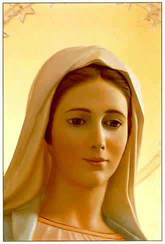

LUZ, INSPIRAÇÃO E PROTEÇÃO
Ao concluirmos este trabalho sobre o CRIADOR, acrescentaremos que embora ninguém viu e vê o SENHOR DEUS, ELE Se mostra presente pelo seu agir: na criação, através da revelação, na história da salvação e na Igreja. Acompanha paternalmente de perto os passos da humanidade que criou, amparando e auxiliando todos os que buscam o seu Amor, para que as pessoas consigam contornar os problemas e solucionar as suas dificuldades, realizando dignamente a missão de sua vida.
PAI boníssimo e preocupado com todos, o CRIADOR sabe que uma maioria das pessoas percorrem caminhos diferentes, completamente distantes do Caminho Divino. E não Se conformando em perder sequer um de seus filhos , ao longo da História da Civilização interveio centenas de vezes, "pessoalmente" ou através de NOSSA SENHORA, de um Anjo ou de um Santo, a fim de chamar a atenção das criaturas por meio das manifestações sobrenaturais , objetivando ensinar e explicar a sua maravilhosa doutrina de Amor, despertando as pessoas da torpeza da indiferença e do pecado, iluminando a visão e a mente, para que vejam e compreendam a finalidade de nossa existência. E também derramando um esplendoroso manancial de graças sobre a humanidade, indistintamente, tanto para os bons como para os maus, demonstra que ama igualmente a todos e por isso, oferece os mesmos benefícios e oportunidades e quer, que as criaturas acolham a oferta Divina, procurando viver seus dias de conformidade com a Lei de DEUS. Infundindo luz e inspiração na vida das pessoas, o CRIADOR concede uma proteção especial àqueles que procuram a conversão do coração para santificar a sua vida. Com esta intenção diversas vezes ELE Se manifestou assim:
"Sede santos, porque EU, o SENHOR, vosso DEUS, Sou Santo". (Lv 19,2)
Homens e mulheres são filhos de DEUS e foram criados para serem felizes, vivendo em harmonia, em igualdade de direitos e em comunhão de amor com o CRIADOR. Por isso mesmo, como o SENHOR concedeu-nos plena e total liberdade de pensamentos e ações, vai depender essencialmente de cada criatura decidir em buscar ou não, o caminho certo para encontrar a paz interior, o progresso na existência e a almejada felicidade, cultivando com perseverança e sinceridade, uma sublime e inefável amizade com NOSSO SENHOR.
F I M


Este Site dedicado a DEUS
PAI, foi extraído do livro de mesmo nome "O MISTÉRIO 
Convite
O Apostolado dos Sagrados Corações construiu diversos Sites, com o objetivo de colaborar na divulgação dos ensinamentos do SENHOR, fundamentando o conteúdo dos Sites, na Sagrada Escritura, na Tradição Cristã, nas Manifestações Sobrenaturais e na Vida e Obra dos Santos, com a intenção de somente informar a verdade. Os endereços abaixo são do PORTAL DO APOSTOLADO. Clique aqui para conhecer nossos Sites.
http://www.apostoladosagradoscoracoes.com/
Como amostragem, apresentamos a seguir, alguns Sites construídos pelo APOSTOLADO, que estão dentro de nosso PORTAL.
NOSSA SENHORA DE NAJU - Manifestações sobrenaturais impressionantes, ilustradas com dezenas de fotografias; as lágrimas de sangue da MÃE DE DEUS; a Comunhão Eucarística na boca da Vidente transforma-se em Carne e Sangue do SENHOR JESUS; estigmas da Paixão do SENHOR nas mãos e pés da Vidente; e muitos outros acontecimentos que testemunham o empenho do CRIADOR em provar a Verdade Cristã.
http://apostoladosagradoscoracoes.angelfire.com/index3.html
NOSSA SENHORA DA CONCEIÇÃO APARECIDA - História mais autêntica do encontro da imagem milagrosa por pescadores; benefícios e graças provenientes da intercessão maternal junto de DEUS; coroada Rainha e Padroeira do Brasil; construção da Basílica, Santuário Nacional.
http://apostoladosagradoscoracoes.angelfire.com/index2.html
VAMOS REZAR?- Tem o objetivo de estimular a Oração, o aperfeiçoamento das virtudes e das qualidades pessoais, incluindo a necessidade da conversão do coração e de ser feita a Vontade do CRIADOR.
http://apostoladosagradoscoracoes.angelfire.com/index4.html
ADORÁVEL E MISTERIOSO ESPÍRITO SANTO - Mostra a Face do Espírito de DEUS, realçando o imenso e paternal amor Divino que guia, ilumina, infunde carismas, protege,dá a vida e santifica a humanidade, a fim de que as pessoas realizem com perfeição e amor a missão de sua vida.
http://apostoladosagradoscoracoes.angelfire.com/index6.html
A VIDA DE NOSSA SENHORA - Infância, juventude, noivado com José, Anunciação do Anjo, visita a sua prima Isabel, dúvida do noivo, casamento de Maria, Nascimento de Jesus, Fuga para o Egito, lar em Nazaré, Assunção aos Céus.
http://apostoladosagradoscoracoes.angelfire.com/index12.html


Para comunicar-se conosco, por gentileza, utilize o E-mail abaixo. Obrigado:


FIRMAS DE BUSCAS